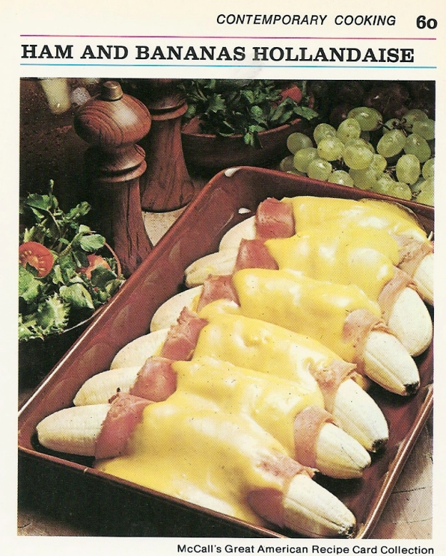

Ham And Banana Hollandaise

Description:
Please do not try this recipe at home. It is a really
bad idea.
Ingredients:
- 6 medium bananas
- 1/4 cup lemon juice
- 6 thin slices boiled ham
- 3 tablespoons prepared mustard
- 2 envelopes (1 1/4-oz size) hollandaise sauce mix
- 1/4 cup light cream
Instructions:
- Preheat oven to 400F. Lightly butter 2-quart, shallow baking dish.
- Peel bananas; sprinkle each with 1/2 tablespoon lemon juice, to prevent darkening.
- Spread ham slices with mustard. Wrap each banana in slice of ham. Arrange in single layer in casserole. Bake 10 minutes.
- Meanwhile, make sauce: In small saucepan, combine sauce mix with 1 cup water, 1 tablespoon lemon juice, and cream. Heat, stirring, to boiling; pour over bananas. Bake 5 minutes longer, or until slightly golden. Nice with a green salad for brunch or lunch.